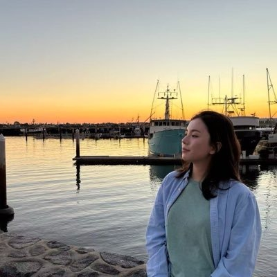

Reinforcement Learning Improves Traversal of Parametric Knowledge in LLMs
Conference on Empirical Methods in Natural Language Processing (EMNLP), 2026.
Ph.D. StudentCarnegie Mellon University

I am a first-year Computer Science Ph.D. student in the Software and Societal Systems Department at Carnegie Mellon University, advised by Niloofar Mireshghallah.
Before CMU, I received my B.Sc. in Computer Science from Simon Fraser University.
I joined Carnegie Mellon University as a Ph.D. student!
Our paper Reinforcement Learning Improves Traversal of Parametric Knowledge in LLMs is accepted to EMNLP 2026 as an oral presentation!
Conference on Empirical Methods in Natural Language Processing (EMNLP), 2026.
NeurIPS 2026 Workshop on Trust-AI-Eval (TAE), 2026.
ICML 2026 GenBio Workshop (GenBio), 2026.